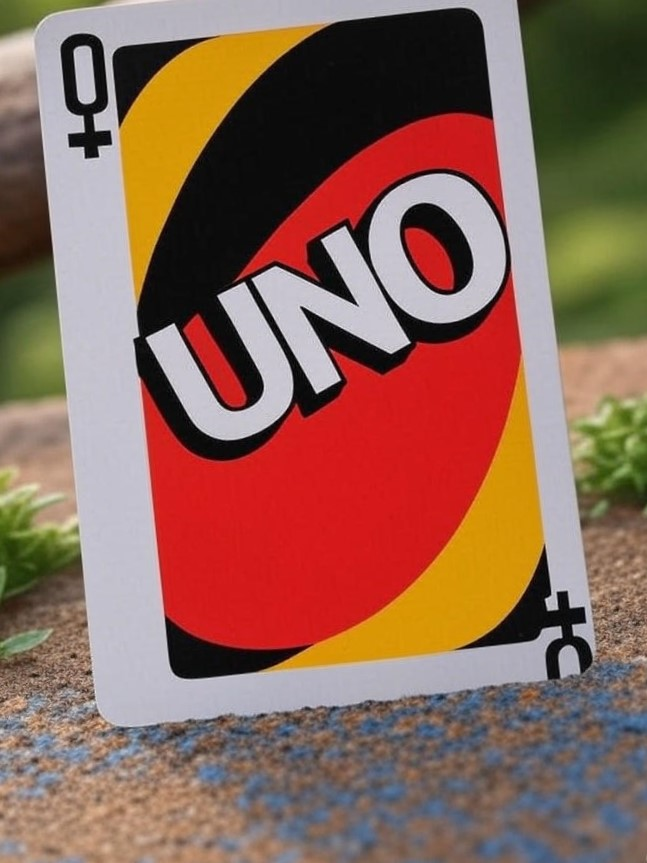
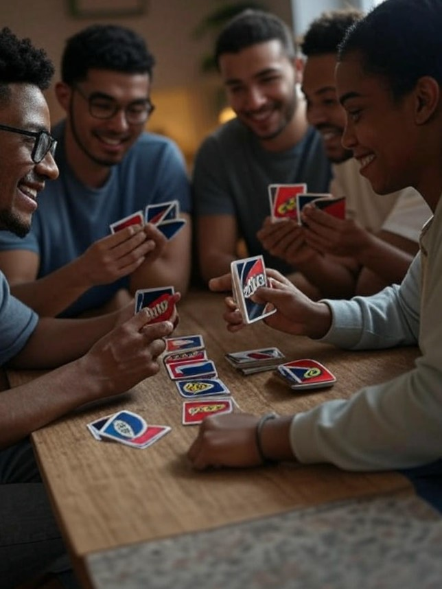

Fun Facts about UNO
Did you know that UNO was originally called "Munchkin"? It was renamed to UNO, which means "one" in Spanish, because players must say "UNO" when they have only one card left. There are also many themed versions of UNO, including ones based on popular movies and TV shows.
Learn more fun facts at Geek Girl Con.
